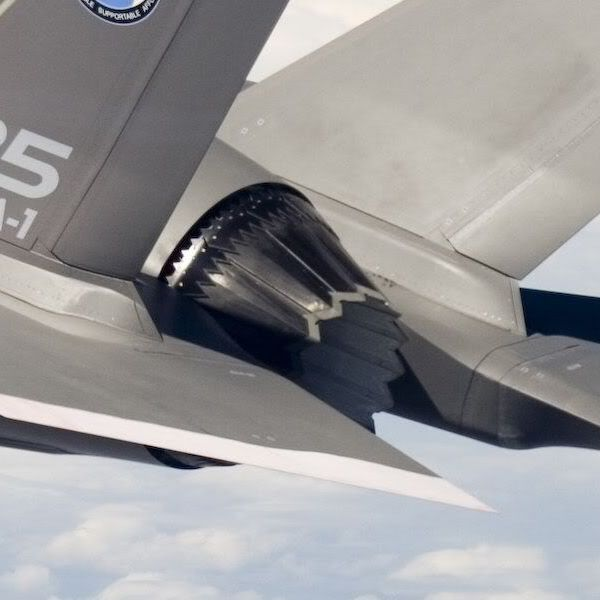
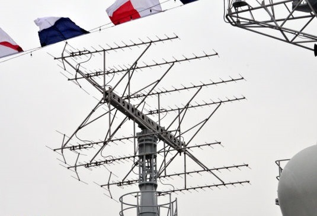
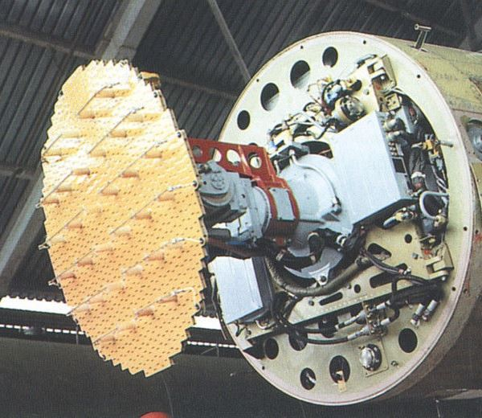
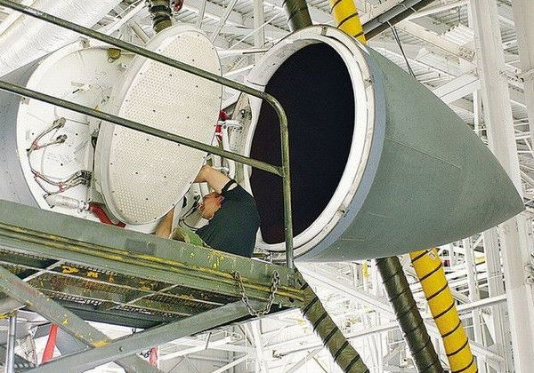

【空军】【海军】雷达与隐身技术之间的矛盾关系（中）
2014-08-09 13:38:00
原文网址：https://blog.udn.com/MengyuanWang/108908625
改用频率更高的波段还有一个好处，就是可以分辨目标的形状。波的反射性质和一般人（其实不只是一般人，牛顿也曾犯过这个错误）熟悉的子弹式轨迹大不相同，也就是有绕射现象。这可以分成三个类别来讨论：1）当障碍物远小于波长时，以绕射为主，能量向四面八方均匀散射，也就是前面我们定义雷达截面积时做过的假设；2）当障碍物大小约略等于波长时，绕射反射皆有，能量主要向入射方回头散射，但是方向性不明显，此时雷达接收到大约两倍于基于均匀散射假设所预测的反射波，所以有些人说反射波因“干涉”而增强；3）当障碍物远大于波长，亦即在波长的八倍以上时，可以视为纯反射，此时障碍物的表面形状决定各部位如何反射雷达波，雷达接收的信号可以经由电脑计算来反推目标的大致形状，尤其是引擎风扇叶片数特别容易分辨，现代雷达经常由此而确认目标的机型。
此外，高频率波段也比较容易做出较窄的波束，这様不但功率密度增加，而且在方位角的定位精度也会大幅提高。尤其是雷达导向飞弹的出现，对雷达定位精度做出史无前例的要求，以当时的技术，只有X Band以下才能勉强满足。由于以上的种种因素，再加上阵列天线的发明与普及，苏联，西欧和美国的军工厂商自1970年代起，基本上除了超大型的战略警戒雷达（如台湾近年出銭请美国建造管理的“铺路爪”，选用了VHF）外，不再使用L Band以上的波段。不幸（对雷达使用者而言）的是，这个现代化的步骤不经意地鼓励了隐身技术的发展；理由很简单：S Band以下的波段其波长在15公分以下，八倍波长只有不到1.2公尺；而F117的外形基本上由至少一公尺长的直线构成，像镜面一様把这些新式雷达的电磁波集中反射到几个特定的方向，散射回入射波方向的功率微乎其微。这恰是隐身技术的学理基础。
战斗机用的雷达，因为空间有限，更是全面採用了X Band以下的波段，其波长在3.75公分以下，八倍波长也只有不到30公分。有了新式电脑的F22设计团队（包括了洛克希德，波音和通用动力）便有了更大的自由来满足气动方面的要求。最重要的是F22可以採用常规布局，带边条的主翼在前，平尾在后，外形虽然多了不少长度颇小于一公尺的边线，但是不像F117和B2的飞翼机形在超音速飞行时阻力那么大。此外例如弹舱门缝原本是个大反射源，现在可以设计成锯齿形边缘；只要锯齿每一边都大于30公分，那么雷达波仍然会被安全地集中反射到旁边去。又如最新的F35战斗攻撃机所用的F135喷射引擎喷射口，还是做了这种锯齿形处理。不过这些隐身设计既然都是针对短波长的雷达而做的，F22和F35对旧式的长波长雷达的截面积就反而与非隐身战机差不多了。但是到了F22出现的1995年，F22设计时的假想对手-苏联-早已分崩离析，至今俄国国力仍旧衰弱，虽然对反隐身雷达的研究做了些投资，美国根本不把他放在心上。要有系统有效率地开发出能撃破F22的隐身盾的新长矛，还是只有中共。

F35的尾巴；锯齿的尺寸显然小于30公分，是F35隐身能力有限的又一证明。
既然形状是隐身技术的主要环节，反制它的最自然的手段就是回头用L Band以上的大波长雷达波，尤其是VHF，其波长在一公尺以上，F22的许多一公尺上下的边线，刚好因“干涉”现象而呈现特强的反射。不过VHF天线实在太大了，连预警机都装不下，只有海军舰只才适合装备。在1980年代，中共的军工技术还只相当于美苏1950年代的水准，恰好有从苏联引进的旧VHF雷达做様本，用现代的积体电路换掉了真空管之后，居然就是一型反隐身能力极强的警戒雷达，这就是H/LJQ-517 。经过将近30年，中共的军工技术已经开始超越俄国，可以望美国的项背；但是今年三月才刚服役的最新型052D驱逐舰，仍然装备了H/LJQ-517系列，可见其藉着大波长的物理性质在反隐身任务上所具有的独特优势是很难以工程手段来复制的。

052C级驱逐舰上的H/LJQ-517B雷达；其由8个八木天线组成的阵列清晰可见。
VHF雷达的波束太寛，虽然可以在远距离侦测到隐身战机，却不能进行精确定位，也不能做目标识别。做为警戒雷达，寛波束不是太大的问题，它仍旧可以及早发现可疑的隐身目标，但是接下来的跟踪，鎻定和飞弹制导还是必须由波长较短的雷达来执行。为了祢补波长上吃的亏，必须用工程上的手段来加强雷达的功率密度和增益（Gain），而这就必须从天线的设计上着手。
远在1960年代，所有UHF波段以下的雷达天线还都是抛物面式的；当时最尖端的科技是脉冲多普勒雷达（Pulse－Doppler Radar），也就是根据反射波的相位改变来分辨目标的速度，从而把高速运动的军事目标和背景分离出来；这就是所谓的下视下射（Look-Down Shoot-Down）功能的基础。在此之前，因为地面的反射波太多太杂，飞机上的雷达是不能向下看的。那个年代开发出来的雷达，现在还在国军序列中广泛使用，例如E2T预警机上的AN/APS-145雷达用的就是UHF频道的抛物面天线（美国最新的E2D将升级採用的AN/APY- 9 ，还是UHF波段，但是改为AESA天线，不过还没服役）。
1960年代开始的新一代阵列式天线的研究，到1970年代之后逐步开花结果，到现在已经全面取代了抛物面式天线。
最简单的阵列式天线是缝隙阵列天线（Slot Array Antenna），早在1938年就发明了，但是到1970年代微电子技术成熟以后才获得普及。它利用电磁波相位干涉的原理加强波束中心（“主瓣”）的强度并抑制浪费到其他方向（“副瓣”）的能量。套用在本文前部的公式，就是藉缩小波束寛度s来增加雷达的探测能力；因为s与阵列单元的数量n成反比，而雷达的探测能力也与波束寛度s成反比，所以探测能力与n成正比，不过每个缝隙单元的功率和效率基本等同于双极天线，一对一比较时是远远比不上抛物面式天线的，因此缝隙阵列天线只有在波长较短的X Band以下时有足够大的n，才最有竞争力。
俄制N011机载X Band雷达採用缝隙阵列天线；突起物是L Band的敌我识别天线；请注意天线后面的机械转向轴。
缝隙阵列天线基本上仍是一种机械装置，波束只能向垂直于天线的方向射出，因此与抛物面式天线一様，必须依靠机械转向。而转向用的机械必然有重量大，结构复杂，容易故障等缺点；而且机械转向很慢，对波束寛的警戒雷达来说还不要紧，对搜索雷达而言，完成一次扫瞄需要较长的时间，在敌情千变万化的现代战场环境里，实在是个缺点，也因此使得缝隙阵列雷达的海军使用比较有限，其应用以1970年代服役的美军战斗机为主；主要是因为其探测距离长的优点，对制导当时刚出现的半主动雷达空空导弹甚为重要。如F14，F15和F16的原装雷达都是缝隙阵列。又如英国制的EF2000第一版CAPTOR雷达，用的也是缝隙阵列；不过在21世纪，这是已经明显落后的装备，只因西欧的军用雷达技术远远落后于美国，不得不为之。俄国的雷达技术更加糟糕，SU-27的N001雷达原本计划使用缝隙阵列天线，但是苏联在1980年代做不出来，只好仍用抛物面式天线。等到1990年代Tikhomirov设计所终于在Bars N011雷达上用了缝隙阵列天线，结果性能太差，没有顾客，所以又等了十年，有了印度当冤大头，才有銭改进为採用PESA（Passive Electronic Scanning Array）的N011M和N035。
国军F16A/B所装备的AN/APG-66也使用缝隙阵列天线；同一代的军用电子设备，美国的比俄国的出厰早，寿命长，重量轻，性能好，和喷射引擎并列为美国空军的两大主要技术优势所在。
PESA就是针对机械转向很慢这一缺点而改进的；它和缝隙阵列一様都由全阵列共用一个微波幅射產生器，但是（依接受方向的顺序）加入了移相器（Phase Shifter）和1级与2级馈电装置（Level 1 & Level 2 Feed），然后才经过缝隙阵列也有的双工器（Duplexer），波导（Waveguide），接收机保护装置（Receiver Protection）和放大器（Amplifier）。其主要的新功能在于每一个天线单元都可以有它自己不同的相位，如此一来波束可以偏离垂直方向，不需机械转向就能扫瞄大片的空域，这便是所谓的电子扫瞄（Electronic Scanning）。电子扫瞄比机械扫瞄快得多了，完成一次搜索只需几毫秒。 PESA的缺点在于其电磁波通路最长，移相器和馈电装置对增益有负影响（单程大约-2.1dB），浪费了部分功率。不过PESA的快速扫描能力对全自动高速掠地飞行和非目视精确轰炸至关重要，而且轰炸机的电力供应远比战斗机充裕，一点额外的损失无伤大雅，所以总体来考虑，PESA特别适合低空轰炸机和其他大型军机。最早的空用PESA是1977年服役的E3预警机所用的AN/APY-1（增加对海搜索能力后，改名为AN/APY-2）和1983年开始服役的B1B所用的AN/APQ-164（同年，Ticonderoga号巡洋舰服役，其所装备的AN/SPY-1神盾雷达也是PESA）。随后的B2所用的AN/APQ-181原本也是PESA，在2010年改进成了AESA。俄军的SU-34战斗轰炸机用的V004雷达也是PESA。至于空优战斗机用PESA的就不多了，只有AESA技术有问题的俄国（SU-30MKI和SU-35）和法国（Rafale，阵风）才不得已而为之。

B1B的机头特写；与缝隙阵列相比，PESA省略了转向用的机械轴，但是天线明显增厚。
【待续】